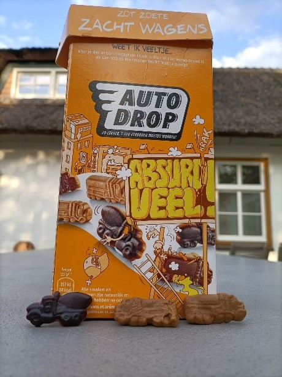
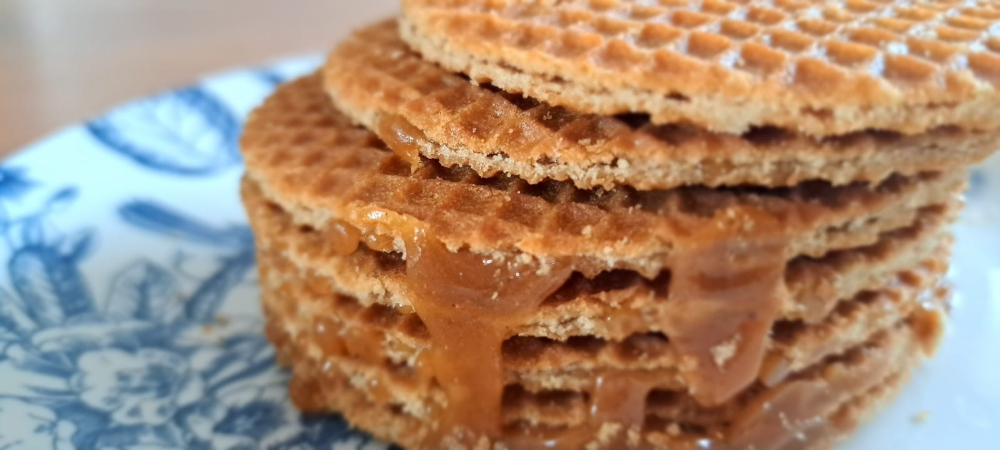
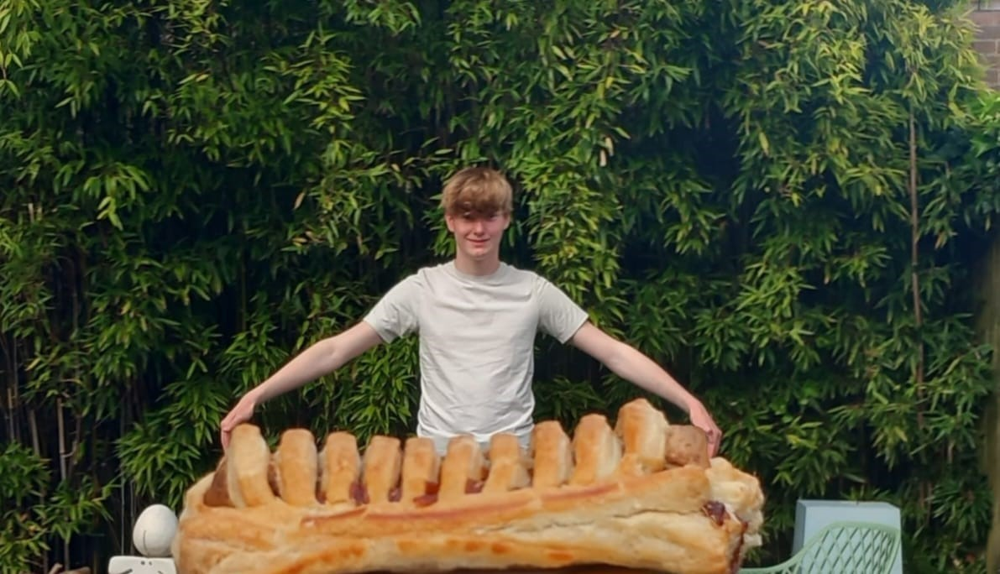
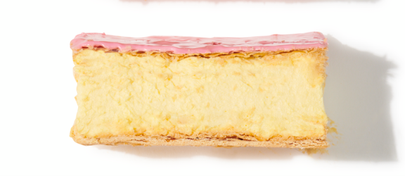
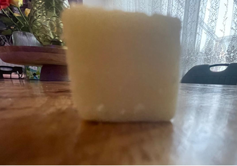
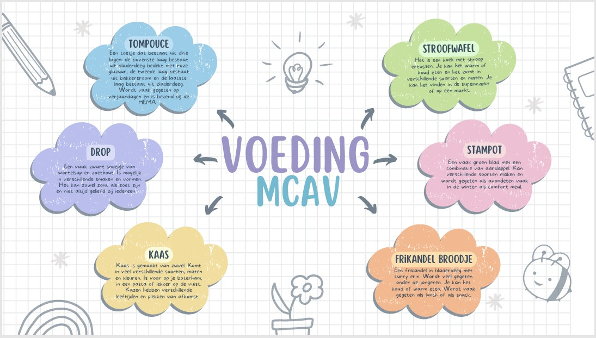

Photo 1
In the picture you can see ‘drop’. I have used to brand ‘Autodrop’ this is a famous brand in the Netherlands. Drop is a black sweet or salty treat and it comes in a lot of different flavors. In this case it has the shape of a car. There is also a table in the picture and the package of the drop. The emotion you are going to get with the picture is hunger and you want to eat a ‘drop’. The photo is about food and specifically what you want to eat after a long day because it is usual to have this in your home most of the time. It is something easy you can just grab and don’t have to think about it. You can get ‘drop’ in a supermarket or sometimes in herb shops. If you get ‘drop’ in herb shops it has usually a unusual flavor like coffee.
Photo 2
In this picture you see a ‘stroopwafel’. It is a very famous Dutch food. In The Netherlands people eat is as a snack. It is a kind of cookie or waffle that’s sliced in the middle and filled with ‘stroop’. You can buy it on the market but also in the supermarket. The best stroopwafels you can get on the market, because then they are a lot bigger and then they are still warm. So that is the best way you can get the stroopwafel here in The Netherlands. The picture has been taken from a very close angle to the stroopwafel, so you can see the details on the stroopwafel very well. It has a checkered pattern, which you can see on the photo. With this photo I want to give a closer look at the stroopwafel, literally and figuratively, because it actually is a very special snack which you can only see in The Netherlands and none other country has this kind of snack. The emotion it will give you is that you want to taste the stroopwafel yourself and that it looks delicious. The meaning behind the photo is that it’s a little delicious snack that is very special and extraordinary.
Photo 3
In this photo, there is a boy standing outside while he is holding a very large ‘frikandelbroodje’ with both hands. The ‘frikandelbroodje’ looks much bigger than normal. A ‘frikandelbroodje’ is a typical Dutch snack that mostly students eat in their lunchbreak. It is a pastry with a Dutch sausage called ‘frikandel’ inside. The ‘frikandelbroodje’ looks a lot bigger than normal, because it’s taken with the pastry from very close and the person holding it is a lot further away. This makes it seem like the boy is actually holding a very large frikandelbroodje. The feeling you get from this photo is that it’s funny and surprising, because it’s very unusual that the ‘frikandelbroodje’ is so large. The picture is about the ‘frikandelbroodje’, which is a typical Dutch food and it’s about enjoying this Dutch snack, but now seen from a different way. The meaning of this photo is that not everything is what it seems and it shows how great the ‘frikandelbroodje’ is, both literally and figuratively in this photo.
Photo 4
In this picture, there is a famous Dutch dessert ‘’the tompouce’’ lying on a white plate. It consists of 2 layers of puff pastry with a thick layer of pastry cream in between. The top is covered with a smooth, glossy, pink layer of sugar icing. The picture is taken from the side, so you can see the layers clearly, and you can see the colour contrast. This picture gives me the feeling of comfort and memories. Because the best place to buy a tompouce is the HEMA. And I often go with friends of mine to the HEMA to get a tompouce, thus every time I eat one, I think about them. Tompouces are also associated with celebration and joy. Like on King’s Day, we eat tompouces with an orange colour. Orange is the national colour of the king. This picture shows an experience most of the Dutch people share. By photographing it in such an isolated way, the colours, shape, and textures pop out. This dessert shows something celebrational and pride.
Photo 5
In this photo, there is a piece of Dutch Gouda cheese placed on a wooden table. The cheese is pale-yellow colour and a square shape with a slightly uneven top. The background shows a cozy room, including lace curtains, a plant, decorations, and a chair. The focus is on the cheese, while the rest of the image is softly blurred. This photo recalls the feeling of Dutch tradition and home life. Dutch cheese cubes are often eaten at ‘’borrelavondjes’’. Cheese is an important part of Dutch culture, and this piece symbolizes it. The warm, homely setting adds to the idea of comfort and simplicity. The photo is about appreciating ordinary things, and that not everything that comes with cultural identity needs to be big. With this picture, I show you that people in the Netherlands are very happy when you are serving a cheese cube at a party or any other place. It doesn’t have to be big.
Infographic
